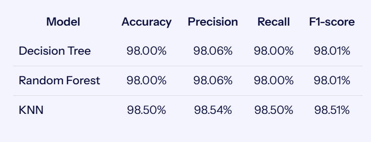

Model Performance Overview
The three machine learning classifiers achieved test accuracies of 98% or higher. K-Nearest Neighbors (KNN) achieved the highest test accuracy of 98.50%, slightly outperforming Decision Tree and Random Forest.
The dashboard compares the test accuracy of all three models. Decision Tree and Random Forest each achieved 98.00% accuracy, while KNN achieved 98.50%.

Prediction Performance by Room
The confusion matrices show the agreement between actual and predicted room locations. They help identify which rooms are classified correctly and where misclassifications occur.
Purpose: Show how well each model performs for the individual rooms, rather than relying only on overall accuracy.

Model Generalization
Cross-validation versus test accuracy
| Model | Cross-validation | Test |
|---|---|---|
| Decision Tree | 97.50% | 98.00% |
| Random Forest | 98.50% | 98.00% |
| KNN | 98.38% | 98.50% |
Five-fold cross-validation was used to select suitable hyperparameters. Comparing cross-validation scores with test performance provides additional context for assessing how consistently the models perform.

Understanding WiFi Fingerprints
WS5 and WS3 show the strongest reported correlations with the location label.
Figure 3. Distribution of WiFi signal strengths across the four rooms.
Differences in signal distributions help illustrate why WiFi fingerprints can be useful for room classification.
Add the Figure 3 signal-distribution image in the open space when it is ready.

Classification Metrics
Precision, recall and F1-score provide complementary measures of classification performance. Together with accuracy and the confusion matrices, they give a more complete picture of how the three models classify indoor locations.
Summary
- KNN achieved the best test accuracy at 98.50%.
- Decision Tree and Random Forest each achieved 98.00% test accuracy.
- WiFi signal patterns can distinguish indoor rooms and support accurate room classification.